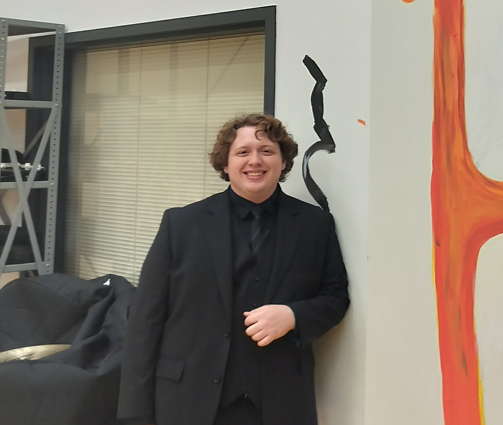

Flute · Ithaca College
Matteo Botelho
Matteo Botelho is a first-year flute performance major at Ithaca College. Originally from the Rochester area, he was a member of the Rochester Philharmonic Youth Orchestra (RPYO), the youth division of the Rochester Philharmonic Orchestra (RPO). As a member he played under conductors Jeff Tyzik and Andreas Delfs, as well as with the RPO in the RPYO’s side by side concert.
Currently, he’s focused on developing his musical voice and technique under Wendy Menhe. Matteo is particularly fond of Bach and French flute music, and loves studying the history of pieces and flute performance practices.
Moving forward, he’s incredibly excited to continue developing his musical abilities, and is eager for opportunities to perform and collaborate.